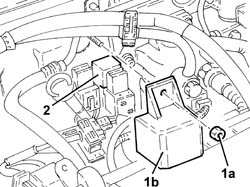

1044D40 fuel pre-heating relay - r + r
- Path
- Procedures > 10 ENGINE > 1044 FUEL CIRCUIT PUMP/AND DEVICES > 1044D fuel heating device > 1044D40 fuel pre-heating relay - r + r
- Kind
- repair procedure (removal / refitting; the operation number is the code)
- Applies to
- engines: 1.9 JTD 8v , 2.4 JTD 10v; all production periods
- Interactive page
- https://sloeber94.github.io/elrnDB-a156/en/#/3237782
Applies to: engines: 1.9 JTD 8v , 2.4 JTD 10v; all production periods
 Removing
Removing
 Refitting
RefittingEnsure that the ignition key is in the stop position, then disconnect the battery negative terminal.
 | Name | Connector |
|---|---|---|
- | Battery |
1. Undo the bolts (1a) and remove the protective cover (1b).
2. Remove the fuel pre-heating relay

Applies to: engines: 1.9 JTD 8v , 2.4 JTD 10v; all production periods
Refitting
RemovingRefit the fuel preheating relay
Place the protective cover back in its housing and fix it using the nuts.
Connect the battery terminal (-).